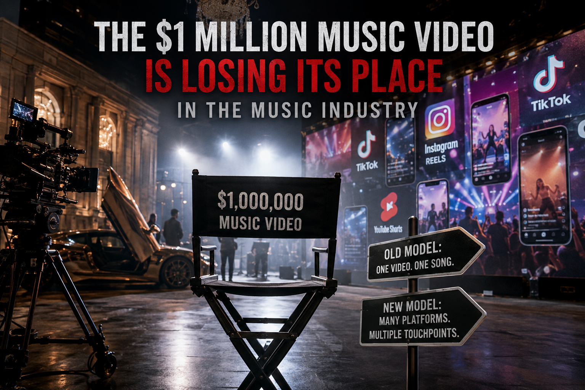

EXCLUSIVE: The $1 Million Music Video Is Losing Its Place in the Music Industry
Music | Industry
Published: Sunday, August 30, 2026

Labels aren’t abandoning visual storytelling. They’re changing what they believe a music video is supposed to accomplish.
There was a time when releasing a major single without a spectacular music video could feel like launching a movie without a trailer.
A superstar would arrive on an elaborate set. Production crews could spend weeks preparing locations, costumes, choreography and special effects. Millions of dollars could be poured into a few minutes of footage designed to turn a song into a cultural event.
That era hasn’t completely disappeared. But the economics behind it are changing rapidly.
Across the music business, record companies and artists are being forced to reconsider one of the industry’s most expensive promotional tools: the traditional, high-budget music video.
The important distinction is that music videos themselves aren’t necessarily dying. The one-video-for-one-song business model is.
The end of the MTV formula
For decades, music television provided a relatively straightforward reason for labels to invest heavily in videos.
A major production could receive television exposure, generate publicity and reinforce an artist’s identity while potentially helping drive record sales. MTV was at the center of that ecosystem.
But today’s music audience doesn’t wait for a scheduled television premiere. A new song can appear on TikTok, Instagram Reels or YouTube Shorts seconds after release. A fan can hear the chorus before knowing the artist’s name. A creator can turn a lyric into a trend. A dance can send an older song back onto streaming charts.
Discovery has become fragmented. And that fragmentation has changed the question executives ask when approving a production.
Instead of asking whether a video looks spectacular, labels increasingly have to ask whether the money being spent on it can generate enough attention to justify the investment. That is a much harder calculation.
The $1 million music video has a problem
Imagine having $1 million to promote a new song.
In 2005, the decision might have been relatively straightforward: make an incredible music video.
Today, that same $1 million could fund months of advertising, dozens of short-form videos, creator partnerships, photography, live content, social campaigns and multiple visual productions. And there is no guarantee that the expensive music video will outperform them.
That’s the fundamental problem facing the record business. Attention has become fragmented.
A listener might discover a song through a 12-second TikTok clip. Then hear it on Instagram. Then encounter it in a YouTube Short. Then search for the full song. Then watch the official video. Then see a concert clip.
The old promotional funnel has become a maze. And labels are beginning to spend accordingly.
The strange paradox: people are still watching
Here’s where the story gets complicated.
If music videos are supposedly becoming less valuable, why are billions of them still being watched?
According to figures cited by Billboard, music-video consumption increased from approximately 93 billion views in 2024 to 96 billion in 2025, with another 19.4 billion views recorded through March 19, 2026.
That is not a dying audience. It’s an enormous one.
The problem is that audience size and production economics aren’t the same thing. A video can generate millions of views without necessarily producing a return large enough to justify its production and marketing costs. That’s particularly important for artists who aren’t already global superstars.
A Taylor Swift-scale release can potentially turn a music video into a global cultural event. A developing artist may spend $150,000 and discover that the video receives only a fraction of the attention necessary to recover the investment. That creates a difficult calculation for labels.
The Billboard problem
One of the industry’s biggest changes came in January 2026, when YouTube stopped providing its data to Billboard for the U.S. charts.
YouTube announced the decision in December 2025 after a dispute over how its consumption data was being incorporated into Billboard’s methodology.
The significance goes beyond a technical change to a chart formula. For years, YouTube represented one of the most visible ways an artist could turn a song into a massive visual success. A viral music video could rack up millions — or hundreds of millions — of views.
But after YouTube’s withdrawal from Billboard’s U.S. chart data, that consumption was no longer feeding directly into the Billboard system in the same way. For record executives obsessed with chart performance, that changes the calculation.
The question becomes: if an expensive video isn’t helping the artist achieve the same measurable commercial objectives, why spend superstar money on it? That’s where the industry’s new caution begins.
The new strategy: many videos instead of one
The industry’s response increasingly appears to be diversification. Instead of spending the entire visual budget on one elaborate production, artists can create an entire library of content around a release.
A single song might generate an official music video, a lyric video, multiple TikTok clips, Instagram Reels, YouTube Shorts, behind-the-scenes footage, studio footage, live performances, acoustic versions, dance clips, interview excerpts, fan-focused content, alternate edits and tour footage.
The result is a fundamental change in how a visual campaign is constructed. The music video is no longer necessarily the campaign. It’s one piece of the campaign.
YouTube’s global head of label partnerships Stephen Bryan has described this broader approach as a collection of video pieces that can work together throughout a song’s promotional cycle. That may ultimately be the industry’s answer to the attention economy.
The mid-level artist may be taking the biggest hit
Superstars aren’t necessarily in danger. If you’re Taylor Swift, Beyoncé, Drake or another artist with enormous global demand, an expensive music video can still make sense.
But what happens to the artist with 100,000 fans? Or 20,000? Or 5,000? That’s where the industry’s transformation becomes painful.
A developing artist may desperately need professional visuals to compete. But a major label may look at the same project and see an uncertain return. A $100,000 video can be a huge gamble. That same $100,000 could instead finance 100 social-media concepts, paid advertising, influencer campaigns, photography, live performances, multiple low-budget videos and months of content.
From a corporate perspective, spreading the money across multiple experiments may be safer. For the artist, however, it can feel like something important has been taken away.
Artists are becoming their own media companies
The modern musician is no longer expected to simply make music. They are expected to create content.
A new single can require a teaser, a studio clip, a lyric video, a behind-the-scenes video, a TikTok, an Instagram Reel, a YouTube Short, a live performance, a dance clip, an interview, a remix, a fan interaction, a meme and eventually, perhaps, the traditional music video.
The song is still the product. But now the song is surrounded by an entire content machine designed to make people notice it. That’s the attention economy. And it’s changing the definition of what it means to be a successful artist.
“Go viral” is not a business model
There is another uncomfortable truth: millions of views don’t automatically equal millions of dollars.
A video can go viral and fail to create a sustainable fanbase. Another video can receive relatively modest numbers but sell concert tickets, strengthen an artist’s identity and introduce them to an entirely new audience. That’s why raw view counts can be misleading.
A music video isn’t necessarily valuable because it gets 100 million views. It may be valuable because those views accomplish something else. They sell tickets. They generate streams. They attract new fans. They establish an artist’s image. They help sell an album. They support a tour. They move an artist into another genre. They create an iconic visual moment.
The real currency isn’t views. It’s impact.
The industry is moving from “video” to “visual campaign”
This may ultimately be the biggest transformation. The music business is gradually replacing the idea of a single music video with something much broader.
Think of it as a visual campaign. One song can now generate an entire universe of content. Some pieces cost almost nothing. Others may cost thousands. A few could still cost hundreds of thousands or even more. The expensive centerpiece hasn’t necessarily vanished. But it now has to coexist with everything around it.
That’s a major change from the MTV era.
Technology is making the change even faster
Production technology is also rewriting the economics. Digital cameras are more accessible. Editing software has become dramatically cheaper. Remote production is easier. Visual effects are increasingly sophisticated. Virtual environments can replace certain physical sets. Artificial intelligence is beginning to influence parts of the creative and production process.
None of that means professional filmmakers are becoming obsolete. It means artists have more ways to create impressive visuals without automatically spending Hollywood-level money. And that could be especially important for independent musicians.
A $5,000 creative concept executed brilliantly can sometimes compete for attention with a $500,000 production. Not always. But sometimes. And in an algorithm-driven world, sometimes is enough.
But something important could be lost
There is also a downside. If labels stop investing in ambitious videos, music could lose something.
Because the greatest music videos weren’t merely marketing. They were art. They created characters. They established fashion. They introduced new technology. They challenged social norms. They created imagery that became permanently connected to the music.
There’s a difference between creating content and creating a visual work people remember for decades. The algorithm doesn’t care about that difference. Artists and filmmakers do.
The music video isn’t dead. The old business model is.
That’s the distinction the music industry needs to understand. The future probably won’t belong exclusively to $1 million productions. But it won’t belong exclusively to 15-second clips either.
The smartest artists will probably combine both. A powerful cinematic video can establish the world. Short-form content can spread it. Behind-the-scenes footage can humanize it. Live performances can turn viewers into fans. Social media can keep the conversation alive. And streaming can convert curiosity into long-term listening.
The video becomes the centerpiece. The content becomes the army.
The next MTV moment could look nothing like MTV
The biggest music-video breakthrough of the next decade may not premiere on television. It may happen on a phone. It could begin with a five-second clip, a strange image, a line from a chorus, a dance, a meme, a visual nobody expected. And suddenly, millions of people are talking about an artist they didn’t know existed yesterday.
That’s the new music-video economy. It’s cheaper in some ways, more accessible in others, more exhausting for artists and potentially more democratic than anything the music business has ever experienced.
The major labels may be cutting back on the traditional blockbuster. But they aren’t abandoning visuals. They’re following the audience. And the audience has moved.
The golden age of the music video may be over. The age of visual music is only beginning.